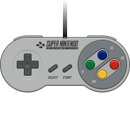

Must Play Fall Games
posted by Michael Rodriguez,September 12,2022
Console: Super Nintendo
- Harvest Moon
- Castlevania: Dracula X
- Shadowrun
Harvest Moon
Fall has begun! And what better way to start fall gaming, than with some of the classics? One such classic is "Harvest Moon". Harvest Moon was released in North America in June of 1997. While it missed a good portion of gamer's radars at the time (due to its late release in the SNES's life time), it has become a cult classic amongst retro gamers. Though many games have an end game goal, this game focuses primarily on building your farm and harvesting crops. You may have seen similarities in more recent titles, such as "Stardew Valley", which basically copies the entire Harvest Moon playstyle. However, one of the true beauties of retro gaming, is to gather an appreciation for the groundwork that was laid in the past that gives modern day developers the inspiration to make current hit games. Even if they were initially overlooked.
.
Castlevania: Dracula X
Fall often brings thoughts of autumn leaves and pumpkins, however, there is also a spooky aspect to the season. I speak of our favorite dress up holiday, Halloween. Though we missed the Japanese release of this game titled "Castlevania: Rondo of Blood", we were instead gifted with the North American release of "Castlevania: Dracula X". Some consider this a downgrade of the Japanese release (The PC ENGINE was graphically superior to the SNES) and others still claim it was a downgrade to its predecessor "Super Castlevania 4". However, if you are looking for a game to put you in the Halloween spirit, this is one game to do it.
.
Shadowrun
Not in the mood for ghosts and pumpkins? Maybe you would rather just enjoy the fall atmosphere? Shadowrun is a game that takes place in Seattle, Washington in the far, far off year of 2050. Though this SNES game was released in North America in 1993, it originally began as a tabletop adventure game similar to Dungeons and Dragons. This game was perhaps the first taste for many, of the "CyberPunk" genre that has gained traction with the recent call back to 80's style. However, if you are still feeling in the mood for some spooky atmosphere, you can simply hire an orc "decker"(hacker) to protect you from dragons and futuristic vampires. Afterwards, you can have them log you into the matrix.
All images are used with the intention of adhering to Academic Fair Use.
Image Sources:
Background Image: https://www.dreamstime.com/illustration/80s-background.html
Harvest Moon screenshot: https://www.ign.com/lists/top-100-snes-games/46
Castlevania: Dracula X screenshot: https://wizarddojo.com/2015/10/30/castlevania-dracula-x-review/
Shadowrun screenshot: http://www.honestgamers.com/systems/content.php?review_id=3958&platform=Super+Nintendo&abr=SNES&gametitle=Shadowrun
SNES topdown:https://www.polygon.com/2017/10/2/16401328/is-the-snes-classic-good
ATARI topdown:https://www.best-electronics-ca.com/2600.html
NES topdown:https://www.polygon.com/features/2018/7/15/17570418/the-35-greatest-nintendo-entertainment-system-games-part-2
Sega Genesis topdown:https://www.forbes.com/sites/mattgardner1/2019/08/14/happy-30th-birthday-to-one-of-the-greatest-consoles-of-all-time-and-the-16-bit-era-in-the-u-s/
SNES Controller Icon: https://www.deviantart.com/bokuwatensai/art/SNES-controller-icon-593368709
*topdown images used to make "Retro Gaming Blog" site image*